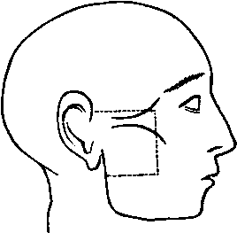

A Dissection To Expose The Otic Ganglion And The Cartilaginous Portion Of The Eustachian Tube
Description
This section is from the book "A Manual Of Dissections Of The Human Body", by R. E. Carrington. Also available from Amazon: A manual of dissections of the human body.
A Dissection To Expose The Otic Ganglion And The Cartilaginous Portion Of The Eustachian Tube
Position
The body lying upon the back, and the face rotated to the opposite side.
I. Skin Incisions
1. Along the upper margin of the Zygoma, from the anterior extremity of the origin of the Masseter muscle to the posterior part of the Condyle of the jaw.
2. Vertically along the anterior margin of the Masseter muscle to a point midway between the origin and the lower margin of insertion.
3. From the lower end of No. 2 transversely backwards to the posterior margin of the Ramus of the jaw.
Reflect the flap backwards, and expose the superficial fascia.
II
Clear this away and expose—
1. The Zygoma.
2. The Temporal fascia just at its attachment to the Zygoma.
3. The Parotid fascia, that covering the Masseter muscle, and a small piece of the Buccal fascia in front.
4. The Temporal, Malar, and Infraorbital branches of the Facial nerve emerging from the Parotid gland.
5. The Transverse Facial artery and vein parallel with and below the Zygoma.
No. 3.
6. The duct of the Parotid Gland below the artery, with branches of the nerve above and below it.
III
Remove the preceding structures and expose—
1. A portion of the neck of the jaw, the Capsular and the External lateral ligaments of the articulation.
2. The Masseter muscle running downwards and backwards from the Zygoma.
3. A small piece of the Buccinator muscle at the anterior margin of the preceding.
4. Emerging from the front border of the Masseter, the Buccal branch of the fifth nerve.
5. The Buccal branch of the Internal Maxillary artery accompanying it.
6. The Anterior Internal Maxillary vein also issuing from beneath the Masseter muscle:
7. The Parotid gland upon the Masseter muscle.
IV
a. Divide both layers of the Temporal fascia at their attachment to the Zygoma.
b. Remove the anterior part of the Parotid gland, the Socia parotidis, and the included part of the Facial nerve.
c. Remove the Masseter muscle within the limits of the skin incision. In doing this its nerve from the third division of the Fifth, with its artery from the Internal Maxillary, and its vein to the Pterygoid plexus will be divided.
d. Saw through the Zygoma in front and behind, and remove the included piece of bone. The following structures are now exposed—
1. The upper half of the Ramus, and the Coronoid process of the jaw, a portion of the upper Alveolus, and the tuberosity of the Superior Maxilla.
2. The Posterior Dental nerve and artery, and the Alveolar plexus of veins lying upon the Superior Maxilla.
3. Part of the fleshy fibres and the insertion of the Temporal muscle into the Coronoid process.
4. The Buccal nerve, artery, and vein in front of the Temporal tendon.
5. The divided end of the Masseteric nerve, artery, and vein behind the tendon emerging from the Sigmoid notch.
6. The Auriculo-temporal nerve at the posterior part, running vertically upwards.
7. The Temporal artery and vein with the preceding.
V
a. Divide the jaw through its neck, and again transversely across the Ramus halfway down.
b. Cut through the Temporal muscle parallel with the upper skin incision.
c. Remove the piece of bone with the muscle attached. Branches of the Buccal nerve and occasionally others from the Masseteric nerve to the Temporal muscle will be divided, and the Middle Temporal artery removed in its substance. There will now be exposed—
1. The External Pterygoid muscle lying transversely.
2. The Internal lateral ligament passing vertically down beneath the Ramus.
3. The Internal Maxillary artery,1 at first crossing the ligament, then lying upon the muscle, and passing between its two heads in front. Whilst the artery is lying upon the External Pterygoid muscle, it is seen giving off the anterior and posterior Deep Temporal, the Masseteric, Buccal, and Pterygoid branches; and whilst upon the ligament the Inferior Dental offset.
4. Lying upon the muscle the superficial part of the Pterygoid plexus of veins, joining in front with the Alveolar, receiving branches corresponding to those of the artery, and forming behind the Internal Maxillary vein which joins the Temporal.
5. Issuing above the upper border of the muscle, the anterior and posterior Deep Temporal nerves. Passing between the two heads, the Buccal nerve and the anterior part of the Internal Maxillary artery; and emerging from the lower border the Dental and Gustatory nerves, the latter being anterior. The Buccal nerve is frequently seen to join the anterior Deep Temporal, and the posterior Deep Temporal may be derived from the Masseteric nerve.
1 When it occupies the normal position superficial to the External Pterygoid Muscle, otherwise it is beneath it.
VI
a. Divide the Internal Maxillary artery in front and behind, cut through its branches, and remove it.
b. Disarticulate the jaw. Remove the External Pterygoid muscle from its origin, and take it away ; dividing at the same time the Buccal nerve.
c. Divide carefully with the chisel the External Pterygoid plate and remove it, cutting the fibres of origin of the Internal Pterygoid muscle from its deep surface. There will now be exposed—
1. The Internal Pterygoid muscle passing obliquely downwards and backwards.
2. The ascending branches of the first part of the Internal Maxillary artery, before hidden by the jaw; viz., Middle Meningeal, running up to the Foramen Spinosum, the Small Meningeal, often a branch of the preceding to the Foramen Ovale, the Tympanic branch backwards to the Glasserian fissure.
3. The deep part of the Pterygoid plexus of veins.
4. The Third division of the Fifth nerve issuing from the Foramen Ovale and dividing into an anterior or motor part from which the anterior and posterior Temporal, the divided Masseteric and Buccal nerves, and the branch to the External Pterygoid muscle may be traced; and a posterior or motor-sensory part from which the Auriculo-temporal with its two roots embracing the Middle Meningeal artery, and the Dental and Gustatory branches may be followed. A communication between the Auriculotemporal and the Facial nerves may be seen. 5. The Chorda Tympani nerve issuing from the canal of Huguier and joining the Gustatory nerve.
VII
Divide the Internal lateral ligament. Cut through the Dental and Gustatory nerves, and reflect them carefully upwards. There will now be seen—
1. The nerve to the Internal Pterygoid entering the posterior border of the muscle.
2. The Otic ganglion lying upon the muscle, closely connected with its nerve.
3. The Tensor palati muscle lying beneath it.
4. The branch of the Otic Ganglion to the Tensor palati, and that to the Tensor tympani muscle passing backwards.
5. The Lesser Petrosal nerve coming through the spine of the Sphenoid, and the communication with the Sympathetic nerve on the Middle Meningeal artery may be traced to the ganglion.
VIII. Divide
a. The Internal Pterygoid muscle, at its attachment to the Ramus, and remove it. Its nerve will be cut through.
b. The Great and Small Meningeal arteries, and the Pterygoid veins, and clear them away.
c. The Third division of the Fifth Nerve, and remove it entirely. The Chorda Tympani nerve will be destroyed.
d. Cut through the Tensor palati muscle from its origin, and at the point where it turns round the Hamular process, and take it away. The outer surface of the cartilaginous portion of the Eustachian tube is now fully exposed, from the retiring angle between the Squamous and Petrous portions of the Temporal bone, to its attachment to the Internal Pterygoid plate.
The following structures are also seen—
1. The Levator palati muscle arising from its lower membranous part, and passing over.
2. The arched upper border of the Superior Constrictor, which muscle arises from the lower third of the Internal Pterygoid plate.
3. Lying upon the preceding the Ascending Pharyngeal artery, dividing into the following branches:—one following the tendon of the Tensor palati muscle, one passing over the upper border of the Superior Constrictor muscle, another to the Middle Lacerated foramen, and sometimes one to the Anterior Condyloid.
Continue to:
- prev: A Dissection To Expose The Vertebral Artery. Continued
- Table of Contents
- next: A Dissection To Expose The Hypoglossal Nerve In The Extra-Cranial Part Of Its Course